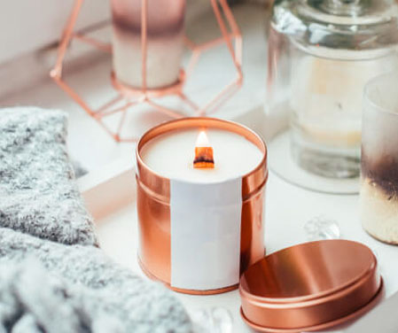
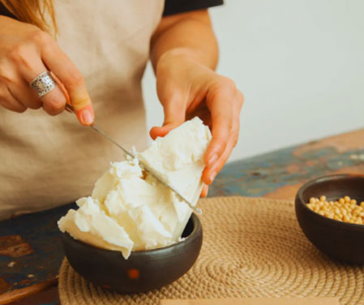

APRENDÉ MÁS CON OLIVIA CANDLES
Servicios & Talleres

Taller "Seguridad y Salud"
Medidas de seguridad para hacer velas artesanales En la elaboración de velas artesanales, como en otras muchas artesanías, las medidas de seguridad para hacer velas son importantes, no sólo debemos tener en cuenta la calidad de la materia prima, la estética y el diseño, sino también protegernos y proteger, garantizando un producto seguro.
Las medidas de seguridad para hacer velas se resumen en una y muy importante, tan solo requiere el estar encima y cortar el fuego ante cualquier imprevisto, es muy fácil el desatender el fuego por una llamada telefónica inoportuna, llamada al timbre de la casa, etc.

Taller "Utiliza Cera de Soja"
La cera de soja es una gran opción para aquellos que quieren hacer sus propias velas en casa. Hay muchas razones por las que la cera de soja puede ser la opción correcta para ti. El beneficio más notable de usar cera de soja es que es 100% apta para veganos y libre de crueldad animal
También se quema más limpio y dura más que otras ceras populares, como la cera de abejas o la parafina. Las velas de soja también son más fáciles de limpiar y tienen un menor riesgo de incendio.